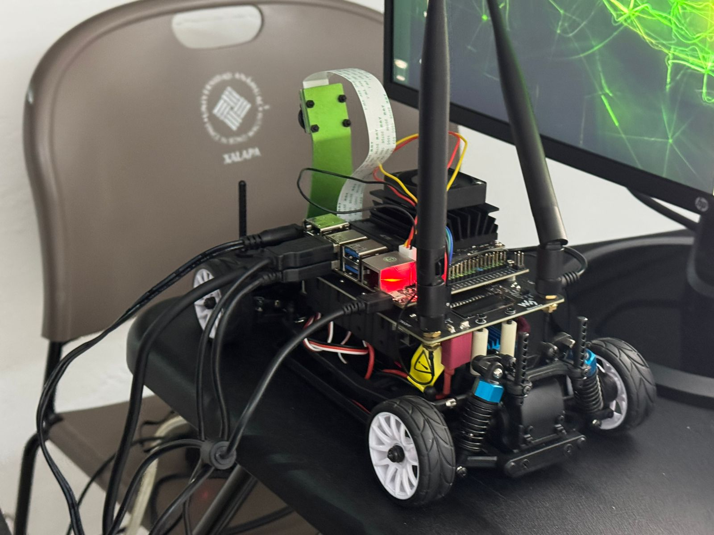
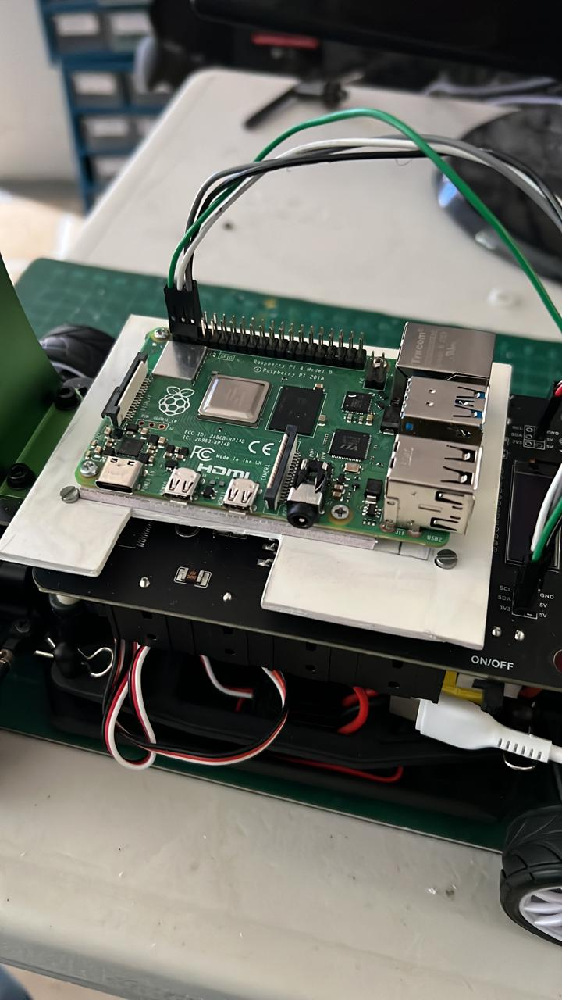
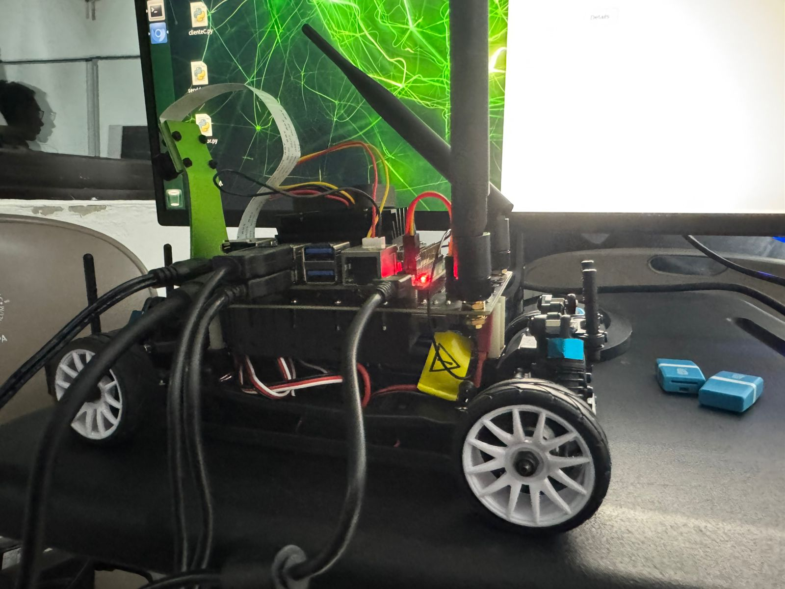
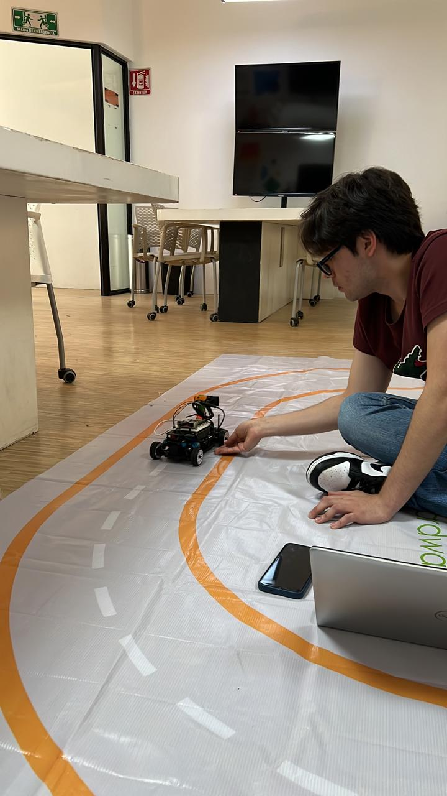

Donkey Cars

Objective and Description
Develop an autonomous ground vehicle capable of navigating a predefined track using computer vision and control algorithms. The project was conducted over one academic year as part of the Practicum course, an investigation-oriented engineering project focused on applying concepts from computer vision, embedded systems, control engineering, and robotics.
Project Summary
This project involved the development of an autonomous vehicle based on the NVIDIA JetRacer platform. Initially, the system was intended to operate using a Jetson Nano and its original camera; however, hardware and software limitations prevented reliable operation. After extensive troubleshooting, the platform was redesigned using a Raspberry Pi 4 and a USB webcam while retaining the original vehicle chassis, motors, and steering system. The resulting system successfully implemented lane detection, vehicle guidance, remote monitoring, and trajectory control using computer vision techniques and a PI controller.
My Role
• Computer vision development •Embedded software development • Vehicle control implementation • Hardware integration • System testing and debugging • Research and technical documentation
Technologies Used
Hardware
• Raspberry Pi 4 • USB Webcam • NVIDIA JetRacer Chassis • DC Motors • Steering Servo • Li-ion Battery Pack
Software
• Python • OpenCV • NumPy • Jupyter Notebook • Adafruit Libraries • ServoKit
Technical Description
Technical Description The vehicle uses a webcam to capture live video of the driving track. Computer vision algorithms process each frame to identify the yellow lane boundaries that define the track. OpenCV is used to perform image filtering, contour extraction, and centroid calculations. The midpoint between the detected lane boundaries is then used as a steering reference for the vehicle.
Computer Vision Implementation
The vision system was divided into four primary stages:
1. HSV Color Conversion
The camera image is converted from BGR to HSV color space to improve color segmentation and reduce sensitivity to lighting variations.
2. Color Segmentation
A binary mask isolates yellow pixels corresponding to the track boundaries. Adjustable HSV thresholds allow tuning under different lighting conditions.
3. Contour Detection
The system detects contours in the binary image and filters out noise. Only the two largest contours are selected, representing the left and right lane boundaries.
4. Centroid Calculation
The centroids of the lane boundaries are calculated and used to determine the vehicle's target position relative to the center of the lane.
Control System
A PI (Proportional-Integral) controller was implemented to regulate steering behavior. The controller continuously calculates the error between the desired lane center and the vehicle's detected position. The proportional term provides immediate corrections while the integral term reduces accumulated error over time, resulting in smoother and more stable steering performance.
Curve Handling Strategy
One of the main challenges occurred during turns, where one of the lane boundaries could disappear from the camera's field of view. To solve this problem, the vehicle temporarily switches to a line-following mode. When only one lane boundary is detected, the vehicle follows the remaining visible line until both lane boundaries become visible again. This approach significantly improved stability and smoothness during curved sections of the track.
Hardware Adaptation
The original Jetson Nano-based architecture presented several issues, including storage limitations, camera recognition failures, and software instability during autonomous training.
To overcome these challenges:
• The Jetson Nano was replaced with a Raspberry Pi 4.
• The original camera was replaced with a USB webcam.
• Custom 3D-printed mounts were designed and manufactured.
• A USB-C power solution was integrated to safely power the Raspberry Pi using the vehicle's battery system.

Result
• Successfully developed a functional autonomous vehicle platform.
• Implemented real-time lane detection using computer vision.
• Achieved autonomous track following using a PI controller.
• Created a remote monitoring and parameter tuning interface.
• Integrated hardware, software, and control engineering concepts into a single system.
• Designed and manufactured custom 3D-printed components.


Project Repository
https://github.com/YiyoChimal/CochesAutonomos__DonkeyCars_UAX
.Year: 2025